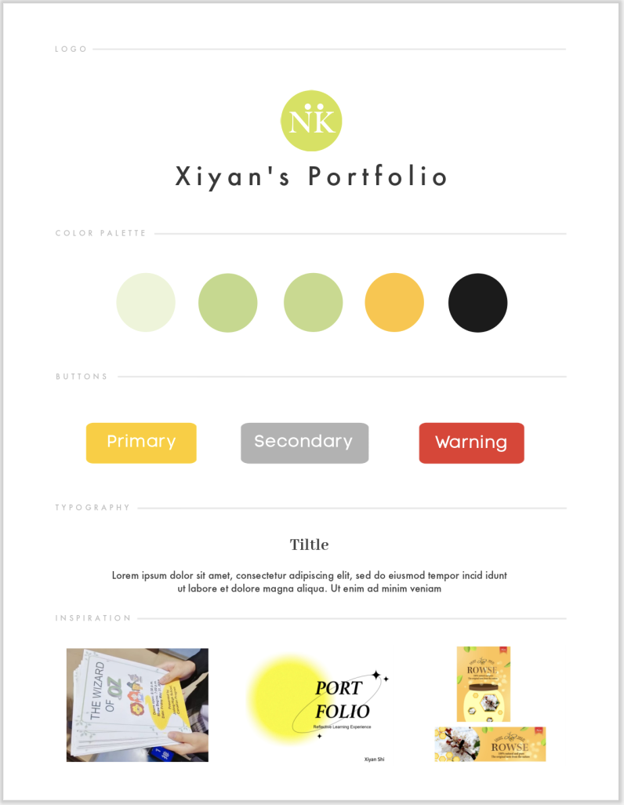
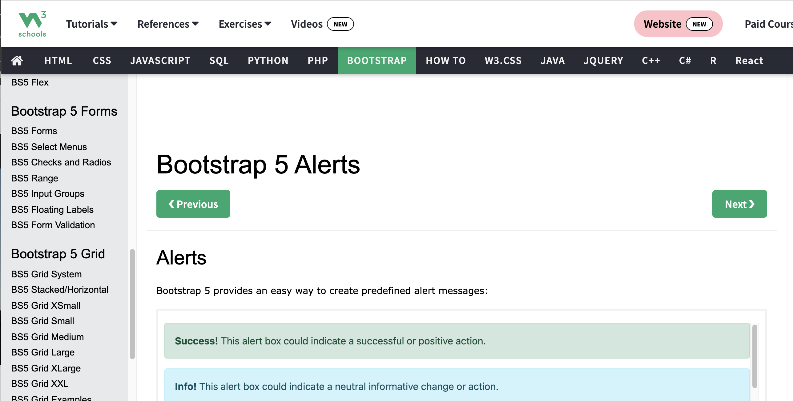
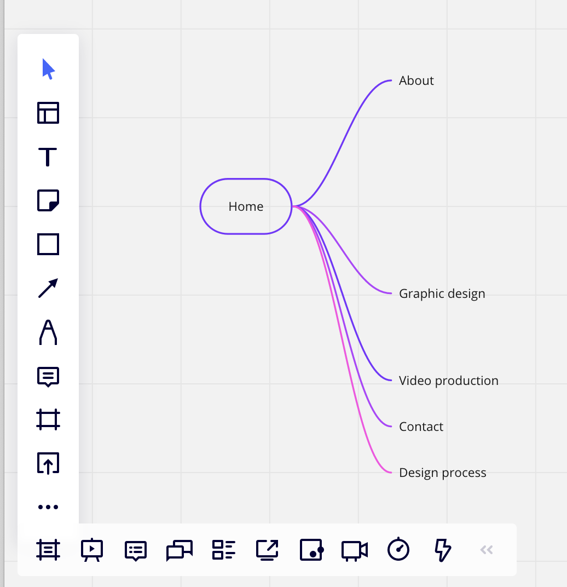
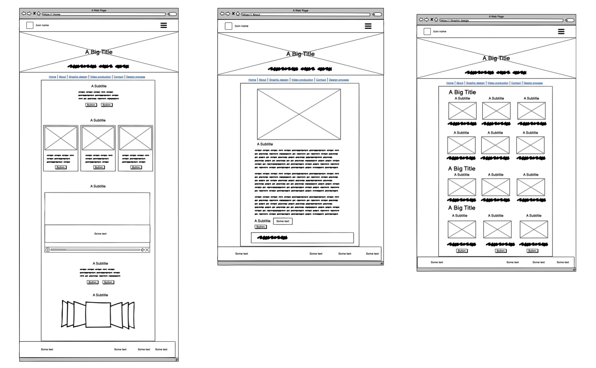
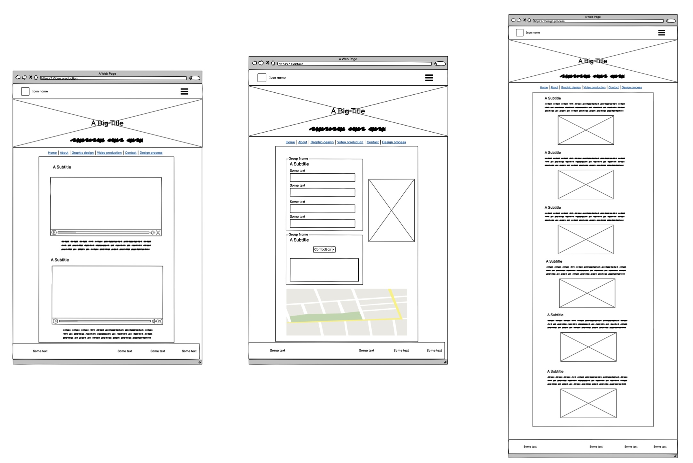
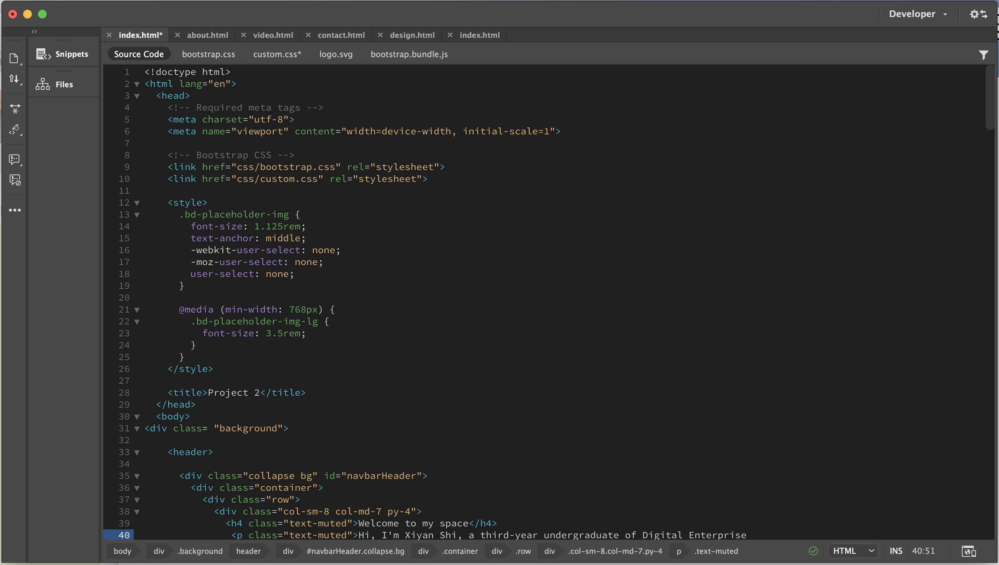
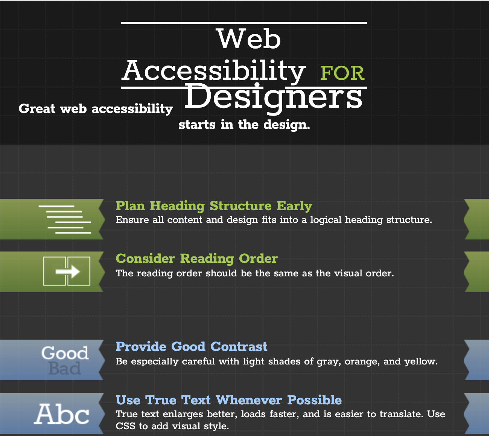

Multimedia Artist, Designer, Developer
Firstly, I created a mood board when I came up with the content on my site. I designed my logo based on my English name called Niki by adobe ps. Then, I chose white as my background color, different shades of green to predict elements, and yellow for most buttons. Besides, I applied various colors for the buttons which have specific functions. For the selection of font, I designed titles with bond serif family and texts with light sans-serif ones. I also found some images from my designs to support the page of graphic designs.
Before I started my coding, I reviewed all the components we learned on the website of w3school. It is vital for the layout and content of my portfolio website because I should consider how to incorporate these functions in different pages appropriately.
I designed the sitemap of this website which was divided into 6 pages. The main page is home including appropriate navigation to all 5 inner pages, so the other 4 structural branches were about, graphic design, video production, contact, and design process.
To organize the layout of each page, I used Balsamiq to predict my wireframes helping me to reference when I coding.
 In the coding part, I defined the elements of the website by adobe dw. I utilized all my background and experience to display this site as my expectation.
After I complete the coding, I checked my website by principles of web accessibility for designers. At first, I ensured all the content of my site follow a logical reading order, so views could understand the texts and designs clearly. Then, the color of texts and background had strong contracts for views to read. It is confused to use caps so I changed some texts to improve readability. Also, the design of font sizes and length of lines were appropriate to read. Besides, I designed all the links as buttons or with underlines and added clear link texts for views, so they could identify and understand them easily. In addition, the long videos I provided on the website could be played or paused by viewers. Overall, all the standards of accessibility testing were satisfied after modification.
